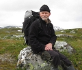

Leif Henry Markstedt
Yrkesverksam konstnär sedan 1970-talet.
| Född: | 1950-02-16 Murjek, Jokkmokks fs, Jokkmokks sn. [1] |
|---|
| Levde: | 1955 Byske, Byske fs, Byske sn. [1] |
|---|
| Levde: | 1971 Lieg 174, Västerås, Lundby fs, Västerås kn. [1] |
|---|
| Levde: | 1981 Stg 4052, Brödrahemsg 40, Ursviken, Sankt Örjans fs, Skellefteå kn. [2] |
|---|
| Levde: | 1991 Risböle 2:33, Bureå, Lövångers fs, Skellefteå kn. [3] |
|---|
| Vigsel: | 2008-02-15 Dorotea fs, Dorotea kn. [4] |
|---|
| Levde gifta: | 2009 Västra Hjoggböle 105, Skellefteå kn. [5] |
|---|
Noteringar
Yrkesverksam konstnär sedan 1970-talet. Har deltagit i utställningar från Landskrona i söder till Luleå i norr. Är representerad i kommuners, landstings och statens samlingar.
Leif är en god stilist och har idellt fungerat som redaktör under ett antal år för Roten - medlemsblad i föreningen Skelleftebygdens Släktforskare. Han har också skrivit värdefulla och intressanta artiklar i samma blad och i andra sammanhang.
Leif Marksteds blogg: grafit.markstedt.net
Det var när 2016 slog om till 2017 som Skellefteåkonstnären Leif Markstedt fick beskedet – cancern, den släktburna, hade nu intagit hans kropp. Årscirkeln efter denna brytpunkt i livet sluter sig snart och på Galleri Alva visas nu resultatet av vad som följde efter sjukdomsbeskedet, det konstnärliga fält som blev yta för tröst och bearbetning under pågående behandling.
Snön och isarna lägger sig just nu på nytt, men i filmverket som utgör ett av fyra ben i utställningen, är det på de nu svunna vårisarna och vårsnön som konstnären ger sig ut. ”Retrospektiv” är titeln på det fyrtio minuter långa dokumentet, där vi får del av en gripande handfast krisbearbetning, ett existentiellt litet poem. En eld brinner i filmkamerans centrum; vi följer konstnärens stillsamma ritual när han matar brasan med målningar. En efter en uppgår dukarna till mörk rök, träramarna rangligt balanserande mot varandra som skelett i eldhärden som långsamt äter sig ner genom isen.
Samma hav och samma självklara och pragmatiska hållning gentemot naturen som livsförklarande faktor uppvisas i det långa verket med den långa titeln ”Jag försökte inbilla mig se en skymt av ett segel”. Här tecknar Markstedt norra Västerbottens skärgård i mättade blyertsfält på papper som löper längs fyra väggar. En återskapad kustlinje tecknas, uppbruten av kobbar och öar, som ger en rumslig upplevelse som blir stillsamt kongenial med hur hav och liv står sammankopplade och hur det i livets villkor ingår att inte förmå överblicka en hel horisont. Tillvaron kräver av oss ständig förflyttning och vid nya perspektiv tappar vi ett annat.
Landskapen och livresorna knyts samman i sviten Land, där konstnären återvänder till barndomstrakterna i Gällivare och Jukkasjärvi. Sájmmujåhkå, Hávggajávrre och Hávggavuobme är titlar på verken i blyerts och grafit som presenterar en samisk/finsk/svensk topografi – med, gissar vi, både inre privata och strikt fysiska dimensioner.
En skärva barndom återfinns också i den installation/skulptur som utgör den sista av fyra delar i utställningen. I ett kubformat akvarium med havsvatten skiktas ett gammalt fotografi in, ett barn på färd genom vinterlandskap – symbol, sluter vi oss till, för det genetiska arv som utgör en av tre faktorer bakom cancer, uppräknade av konstnären själv i utställningstexten. Miljön och slumpen är de två övriga – båda utläsbara i verket i form av hotfullt illröda moment och så vattnet, som väl får gestalta den rörlighet,i livet och sjukdomsdiagnoserna, den oförutsägbarhet som ju både rymmer hot och hopp.
Text och bild SARA MEIDELL kulturredaktör på Västerbottenskuriren i Umeå
Personhistoria
| Årtal | Ålder | Händelse |
|---|
| 1950 |
|
Födelse 1950-02-16 Murjek, Jokkmokks fs, Jokkmokks sn [1] |
| 1955 |
|
Levde 1955 Byske, Byske fs, Byske sn [1] |
| 1955 |
5 år |
Brodern Rolf Anders Markstedt föds 1955-07-07 Byske fs, Byske sn [1] |
| 1971 |
|
Levde 1971 Lieg 174, Västerås, Lundby fs, Västerås kn [1] |
| 1977 |
27 år |
Fadern Karl Henry Markstedt dör 1977-12-13 Umeå, Ålidhems fs, Umeå kn [6] |
| 1981 |
|
Levde 1981 Stg 4052, Brödrahemsg 40, Ursviken, Sankt Örjans fs, Skellefteå kn [2] |
| 1991 |
|
Levde 1991 Risböle 2:33, Bureå, Lövångers fs, Skellefteå kn [3] |
| 2008 |
57 år |
Vigsel Karin Margareta Stenmark Holmlund Markstedt 2008-02-15 Dorotea fs, Dorotea kn [4] |
| 2009 |
|
Levde gifta Karin Margareta Stenmark Holmlund Markstedt 2009 Västra Hjoggböle 105, Skellefteå kn [5] |
Dokument
Källor
| [1] | Mtl Västmanlands län 1972 |
| |
| | |
| [2] | Mtl Västerbottens län 1981 |
| |
| | |
| [3] | Mantalslängd 1991, Västerbottens län |
| |
| | |
| [4] | Leif Markstedt |
| |
| | |
| [5] | https://www.ratsit.se/sok/avancerat/person |
| |
| | |
| [6] | RTBd 77 / SPAR 80 |
| |
|
|  |
| 2012-07-29. Leif Markstedt. |
|
{kind=link}